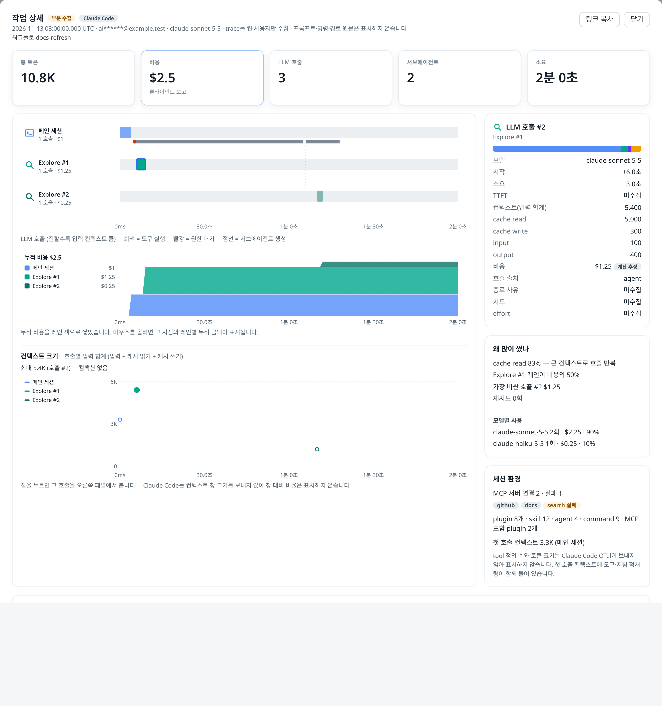
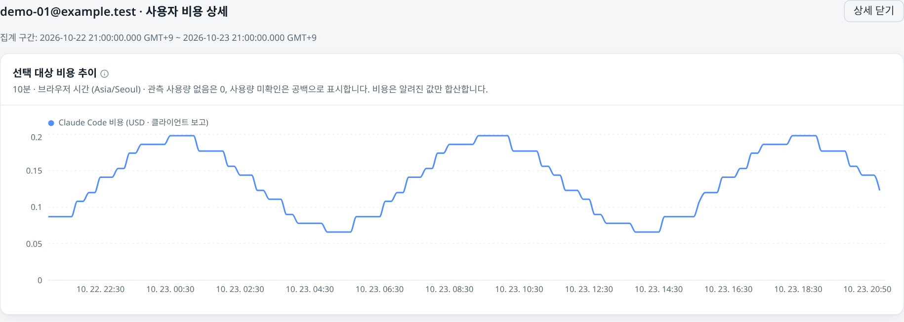
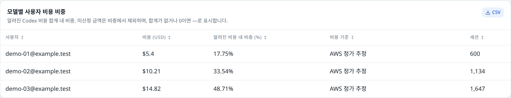

Claude Code + Codex · ドキュメント
AIコーディングの利用状況とコストを把握する
Claude CodeとCodexの利用状況を確認し、ユーザーの時間帯をたどってTask Traceを開きます。エージェントレーン、モデル呼び出し、累積コストを確認できます。
更新日: 2026年11月14日 · ソースの動作を説明しています。インストール済みのリビジョンで確認してください。
Task Traceを開く · Codexの診断トレースを調べる · 収集を有効にする
時間範囲の選択、デバイスのセットアップ、Task Trace のウォークスルーを見る
作成日：2026年11月14日 · 48秒 · 英語のテキストと Amazon Polly のナレーション · 控えめな背景音楽。合成フィクスチャを使った実際の React 画面と、Luna が翻訳した表示ラベルを使用しています。コストは架空のものです。ビジュアルには HyperFrames、音声の合成には Remotion を使用しています。トランスクリプト（英語） 。
集計値から説明へ
開始時刻と終了時刻を正確に指定し、ユーザーのトレンドをドラッグして、その期間の作業を確認します。
デバイスを登録した後、ターミナルでコマンドを1つ実行してデバイス Collector をインストールします。
エージェントのレーン、モデル呼び出し、トークンの内訳、セッションの MCP サーバーとプラグインを確認します。
利用できないバケットを破線で結んだ単価トレンドを確認します。欠損値はゼロではなく、利用不可のままです。
サービスをビルドしてデプロイする
組織の SSO に接続する
変更点
トークンエコノミクス Productivity では、生産性のコスト方程式（ユーザー数 × ユーザーあたりのセッション数 × セッションあたりのターン数 × ターンあたりのリクエスト数 × リクエストあたりのトークン数 × トークンあたりのコスト）を直前の期間と比較するところから始まり、要因別ウォーターフォール、単価トレンド、モデルのコスト分析、成果あたりのコストを表示します。代表ユーザーは各要因の中央値と比較してグラフ化されます。セッションターンのバックフィル後に、運用担当者がこの機能を有効にします。
Task Trace：モデル、ワークフロー、セッション環境 コストの説明には、モデルごとの呼び出し数とコストが表示されます。ワークフロー実行バッジでユーザーのタスクを絞り込み、同じ種類のサブエージェントには番号を付け、セッション環境には接続された MCP サーバー、読み込まれたプラグイン、最初の呼び出しのコンテキストを表示します。
ウォークスルーを見る
正確な時刻の指定とドラッグによるタスク選択 ブラウザーのタイムゾーンで、開始時刻と終了時刻を秒単位まで指定できます。期間を変更してもユーザー詳細は開いたままになり、上位20件のタスクリストは選択した範囲に追従します。利用状況／コストのグラフをドラッグして、両方の表示範囲を絞り込めます。
時間範囲を選択する
コストの詳細分析 ユーザーやモデルを選択すると、絞り込み済みの詳細が開きます。モデルごとの構成比は既知のコスト小計を使い、価格が不明な場合はその旨を明示します。
Codex の完了効率 キャッシュと推論の比率、完了あたりのトークン数、特定できたセッションあたりの推定コストには、分母とカバレッジが明示されます。
ソースからのインストール リリースをクローンしてアプリケーションイメージをビルドし、ClickHouse スキーマと OTel バックエンドを準備します。クライアントを接続する前に、EC2、ECS、EKS、Lambda への適応方法を比較します。
インストールガイド全文
設定可能な SSO 署名済み OIDC グループをアプリケーションのロールに対応付けます。ID プロバイダーが更新の契約をサポートしている場合は、最長30日の固定ログイン有効期間を設定できます。
ユーザーから Task Trace へ
時間範囲とクライアントのフィルターを選択します。日付ピッカーの「日付と時刻」タブでは、ブラウザーのローカル時刻を正確に指定できます。ユーザー を開き、ユーザーを選択してユーザー詳細 を開きます。
タスクリストには、概要の有効範囲内のタスクがすぐに最大20件表示されます。ユーザーの利用状況／コストのトレンドをドラッグすると、ページとタスクリストの両方の範囲が絞り込まれます。ポイントをクリックすると1つのバケットが選択され、リセット操作で期間全体に戻ります。トークン数、コスト、サブエージェント数、期間で並べ替えられます。ワークフローバッジを選択すると、その実行のタスクだけが表示されます。
タスクを選択してタスク詳細 （Task Trace）を開きます。トークン数、コストの根拠、LLM 呼び出し、サブエージェント、観測された所要時間を確認します。
タイムラインのバーをクリックすると、その呼び出しまたはツールを確認できます。モデル別呼び出し の行を選択すると、該当する LLM のバーが強調表示されます。もう一度選択すると解除されます。Escape キーまたは閉じる を押すと閉じます。

2026年11月14日のソースを、合成フィクスチャと架空のコストでキャプチャした Task Trace。実運用のテレメトリーは含みません。 Claude のタスクはインタラクションスパンを表します。Codex のタスクはトレースされたターンを表し、トークン数と推定コストには関連付けられた完了ログを使用します。現在、Codex のレーンはメインレーン1つのみで、サブエージェント数は収集されません。トレース収集は任意のため、このタスクリストはダッシュボードのアクティビティの一部です。トレースの保持期間は90日です。それより古いトレンドのバケットからタスクリストを開くことはできません。
収集の設定 · Task API と上限 · タスクが見つからない場合のトラブルシューティング
Codexの診断トレースを調べる
Codexを選択した状態でAnalytics を開き、Codex詳細のTrace タブを選択します。Traceを展開すると、span、親ID、モデル、ツール、所要時間、ステータスを調べられます。または、span表をCSVとしてエクスポートできます。
このプレビューには最新の50件のトレースが表示され、各トレースのspanは最新のものから最大200件までです。統計値は表示中のspanを対象とします。モデルフィルターではモデル属性を持つspanのみが対象になります。長いトレースや競合するトレースでは、所要時間とエラーの合計が表示されない場合があります。
診断spanはダッシュボードの利用量やコストに加算されません。上記のTask TraceはCodexの完了ログをターンに関連付けますが、AnalyticsのTraceタブは別個の診断プレビューです。Chatの推論ステップとSQLステップも、さらに別の表示です。
診断API · タスクとspanの関連付け
時間範囲と解像度を選択する 期間ピッカーを開き、「日付と時刻 」を選択して、ブラウザーのタイムゾーンで開始時刻と終了時刻を秒単位まで入力します。終了時刻は範囲に含まれません。共有リンクには、選択したモードと UTC の境界値が保持されます。カレンダー日モードでは引き続き UTC の日付が使用されます。
現在の React コンポーネントでの正確な時刻入力です。デモの表示ラベルは翻訳されていますが、製品のロケールは変更されません。 返された間隔と有効な時間範囲を確認します。正確な時刻を入力しても、取り込み猶予、サーバー側の量子化、過去データのロールアップ精度は変わりません。単位経済性のグラフでは、利用できないバケットをまたいで観測された端点を破線で結びます。これは視覚的なガイドであり、測定値ではありません。

選択したユーザーの詳細。10月24日の合成キャプチャ。 
選択したモデルのユーザー別構成比。10月24日の合成キャプチャ。 各ディメンションを分けて考える
Client はデータを出力するアプリケーションを示します。Backend は観測または推定されたプロバイダー経路を示します。Model はモデルを示します。モデル名だけでは、コーディングクライアントを特定できません。
Claudeのbedrock/enterprise比較は、推定されたセッションチャネルの表示です。ダッシュボードへのログインとは別であり、CodexのエンタープライズA/B比較でもありません。1人のユーザーが複数のチャネルに表示されることがあります。
有効化されている場合、権限制御された読み取り専用のクエリ経路を通じて、Analyticsで追加の質問に回答できます。利用可否はロール、モデルへのアクセス、デプロイ設定によって異なります。
データパイプラインと信頼境界を読む · APIを確認する